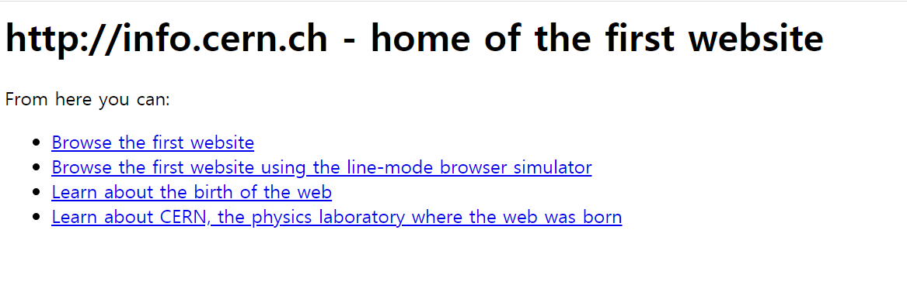

1989년 12월 16일에 개발되고 1990년 12월 20일에 발표 및 보급된 월드 와이드 웹(World Wide Web, WWW, W3)은 인터넷에 연결된 컴퓨터를 이용해 사람들과 정보를 공유할 수 있는 거미줄(Web)처럼 얼기설기 엮인 공간을 뜻하는 용어다. HTTP 프로토콜을 기반으로 HTML로 작성된 하이퍼텍스트 페이지를 웹 브라우저라는 특정한 프로그램으로 읽을 수 있게 하도록 구성되어 있다. WWW, W3, 또는 간단하게 웹(Web)이라고도 한다. 일반인에게 인터넷이 보급되기 시작한 1994년부터 사실상 인터넷과 동의어 취급할 정도로 가장 널리 보급된 인터넷 시스템이다. 일반인들에게 인터넷 한다는 게 뭐냐고 물어보면 대다수는 웹 브라우저 켜고 웹 서핑하는 것이라고 대답할 것이다.
발표 이래로 계속적으로 HTML 자체의 기능을 추가하고, CSS로 더 나아진 디자인을 지원하게 만들며 JavaScript로 정적인 웹 페이지가 아닌 동적인 웹 페이지를 만들고 본격적인 수준의 프로그래밍을 가능하게 하는 등 많은 개선을 거쳐오고 있으며, 또한 jQuery를 위시한 수많은 자바스크립트 기반 라이브러리들과 PHP, ASP, JSP, CGI, Node.js, Django, Ruby on Rails 등 다양한 서버사이드 프레임워크의 등장에 힘입어 2015년 현재 들어서는 거의 모든 다른 인터넷 시스템의 기능들을 흡수하면서 또 다른 소프트웨어 플랫폼으로서의 지위를 누리고 있다. 현재 최신 표준은 HTML5, CSS3, ECMAScript 7이며. 웹 브라우저별 표준 준수 여부를 Acid 테스트에서 확인할 수 있다.

(1990년 '팀 버너스 리'가 개발한 최초의 웹사이트 / info.cern.ch)Internet과 Web은 다르다. 비유적으로는 인터넷이 도시라면 웹은 그 안의 건물 중 하나이고, 인터넷이 도로라면 웹은 그 도로위를 달리는 자동차 한 대이고, 인터넷이 운영체제라면 웹은 그 안에 프로그램 중 하나일 것이다. 결론적으로 인터넷이라는 개념안에 웹의 개념이 부분적으로 존재한다. 인터넷은 1960년에 전쟁무기인 핵공격에도 견딜 수 있는 강인한 통신시스템의 필요성이 대두되어등장했고, 웹은 그 30년 후인 1990년에 스위스에서 등장했다.
웹 브라우저가 깔린 컴퓨터와 웹 서버가 깔린 컴퓨터 두 대가 있다고 가정하자. 웹 브라우저에 특정 주소를 검색하면 웹 브라우저 컴퓨터는 웹 서버 컴퓨터에 해당 정보를 요청하는 전기적 신호를 보낸다. 그러면 웹 서버 컴퓨터는 해당 내용을 찾아 코드를 웹 브라우저 컴퓨터에 전송하다. 이처럼 웹 브라우저와 웹 서버의 관계는 고객(client)과 사업자(server)와 닮아있기 때문에 정보를 요청하는 웹을 웹브라우적 혹은 웹클라이언트, 정보를 제공하는 웹을 웹서버라고 정의한다.

정적(Static) 웹은 언제 접속해도 같은 리소스를 건네주는 웹이다. 하지만, 시간표시와 같은 소스들은 시각적으로 변할 수 있기 때문에 '변하지 않음 /= 정적'이다.
(정적 웹은 블로그나 소개글 등 목록형으로 나열하는 것이 더 효율적인 경우 사용한다.)
동적(Dynamic) 웹은 불러오는 Data base내용에 따라 유동적으로 보여지는 웹이다.